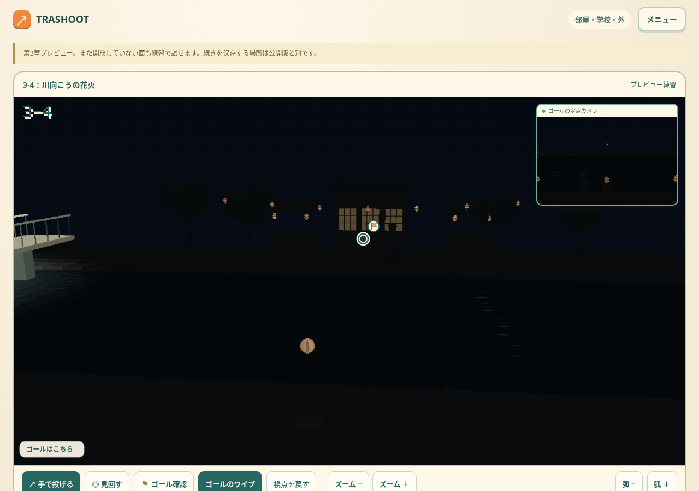
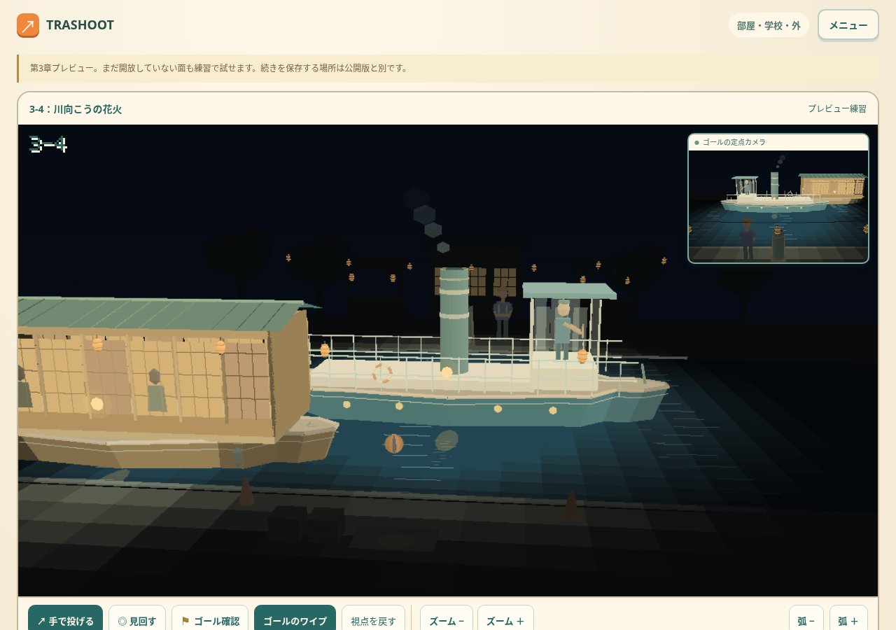
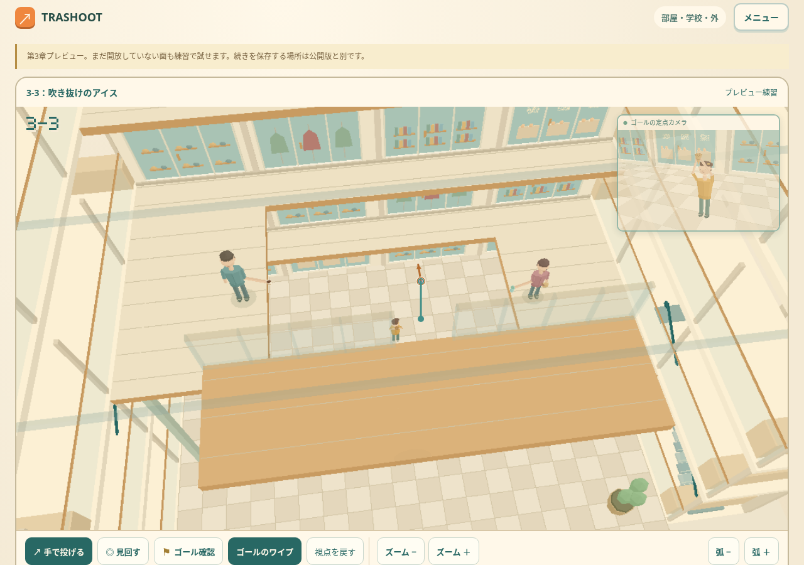

TRASHOOT — ステージのイメージと夜の川
1-4から第5章まで、20面のカード画像を作りました。部屋の3枚と同じ、細かな道具や光を楽しめる絵に揃えています。

3-4。船がいない間は、川と向こう岸が暗くなります。
船が手前を横切ると、灯りに照らされた部分が見えます。
矢印と引っ張り表示の始点を、投げる物の位置に揃えました。小さい物の始点にも輪が見えます。このページの3枚は実際のゲーム画面。画像一覧はステージカード用のコンセプト画像です。